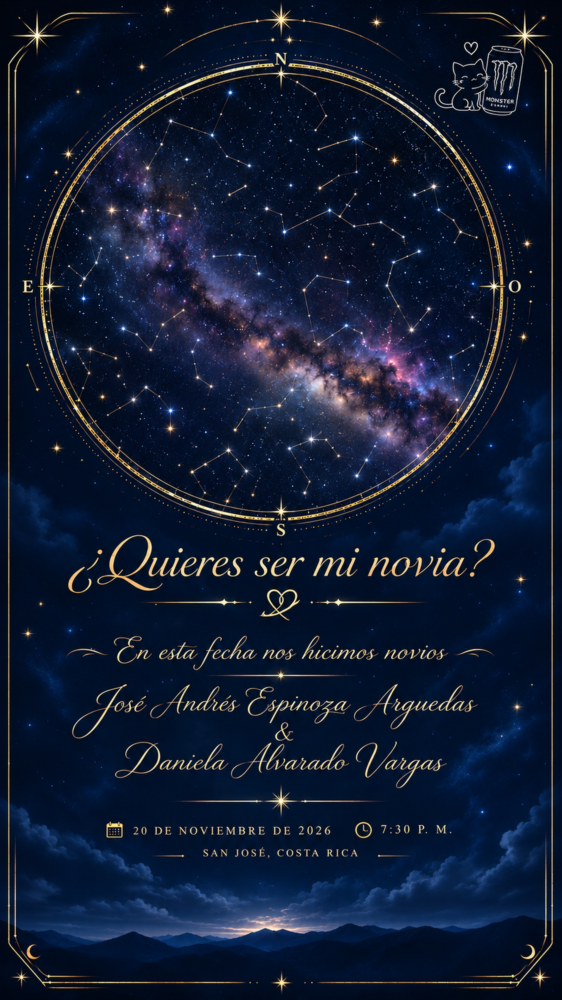

20 DE NOVIEMBRE DE 2026 · 7:30 P. M.
Daniela...
Hay noches que merecen quedarse para siempre en nuestra memoria. Si pudiera guardar una, sería esta, bajo el cielo que nos acompaña hoy.
¿Quieres ser mi novia?
No hace falta responder en esta pantalla. Quiero escucharlo de tus labios, mirándote a los ojos. ♡
Te preparé este pedacito de cielo para que lo conservés siempre.

Descargar nuestro cielo en 4K ♡